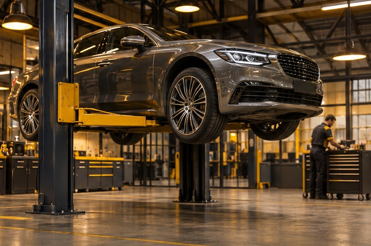

Ремонт и ТО
Диагностика, двигатель, подвеска, развал-схождение и обслуживание кондиционера.
Уточнить запись
Ле-Ман · Автоцентр · Дальневосточная, 158/6
Выберите нужные работы и уточните, что можно совместить по времени.
СПЛАНИРУЙТЕ ВИЗИТ
Диагностика, двигатель, подвеска, развал-схождение и обслуживание кондиционера.
Уточнить записьУточните наличие для вашей модели и согласуйте установку на месте.
Спросить о запчастиДетейлинг и робот-мойка. Уточните отдельно, сколько времени займёт выбранная услуга.
Уточнить времяИллюстрации услуг
Иркутск
Время приёма уточняйте по телефону